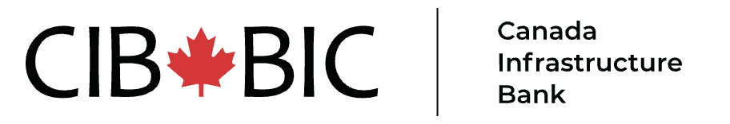
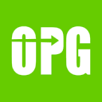

Instructor — Fintech: Digital Transformation
Teaching graduate course FINE6280 on fintech and digital transformation of financial services to 40 students.
Finance · Technology · Developer Relations · Software Engineering
Finance professional, software engineer, entrepreneur. I have built skills in M&A due diligence, financial modelling, AI video production, blockchain, fintech and artificial intelligence.
A global builder
Career, hackathons, and community work across four continents.
GitHub Activity
Contribution history from @intrepidcanadian.
Loading contribution data…
By the numbers
years in infrastructure finance — from solar assets to nuclear energy.
GitHub repositories spanning AI agents, blockchain, DeFi, and full-stack apps.
Master of Law (Osgoode) and Master of Finance (York University).
BBA from York University, Schulich School of Business.
Software Engineering at BrainStation.
Selected organizations


About
I bring a finance-meets-tech perspective to everything I do — from corporate development at OPG to teaching fintech at Schulich to building AI agents.
Full-stack development, AI agents, blockchain, video production tools. Python, TypeScript, Solidity, Next.js.
M&A, financial modelling, infrastructure investments, corporate development. OPG, Shopify, CIB, AIMCo.
Community building, hackathon organizing, technical education, workshops. Conflux, Alephium, and Uniswap.
Tools & technologies
Experience
Teaching graduate course FINE6280 on fintech and digital transformation of financial services to 40 students.
M&A and new project development across nuclear, real estate, and renewable energy.
Financial modelling for Shop App marketplace. Built business cases and launched the Shop Cash Loyalty Program.
Due diligence on equity/debt investments in Canadian infrastructure — transmission, district energy, SMRs.
M&A and acquisition of private companies. Closed a $150M private placement for water heater portfolio.
Built complex financial models for acquisition underwriting and financing. Managed portfolio companies.
Fundraising and acquisition of solar assets (>50 MW). Transactions across Europe, US wind, UK airports.
Events
Hackathons, conferences, and events I've hosted and attended.
Projects
View all on GitHub.
AI video production + gasless gift-card redemption on Conflux eSpace
Full-stack platform for AI-powered video production with an integrated rewards system. Tournament winners redeem real-world gift cards across 300+ brands using USDT0 — no gas needed.
Ultra-lightweight personal AI assistant — 99% fewer lines of code than OpenClaw. Multi-platform chat integration.
Ultra-lightweight personal AI assistant with desktop app. ~4,000 lines delivering core agent functionality.
Open-source alternative to Claude Design. 31 skills, 72 design systems, sandboxed preview, multi-format export.
Concept-to-theatrical-trailer pipeline. Claude + Seedance 2.0 + ffmpeg with human-in-the-loop review.
Personal wiki for AI video production — prompts, camera angles, lighting, character consistency, motion.
Developer bounties program for the Conflux Network ecosystem. Open-source projects and incentives for builders.
Automated trading bot for prediction markets with AI-powered analysis and risk management.
Course materials for graduate-level Fintech: Digital Transformation of Financial Services.
Making websites accessible for AI agents — Chrome extension and RESTful API for browser automation.
The finance × code suit
Source: 3D model "Fancy Tailcoat Suit" by LuuHung · CC-BY-4.0
Lab
Software · Hackathons · Other
Video Work
Other
Education
Osgoode Hall Law School, York University
Master of Law
Schulich School of Business, York University
Master of Finance
Bachelor of Business Administration
BrainStation
Software Engineering Certification
Atrium Academy
Uniswap Hook Incubator — Cohort 1
Continuous Learning
Full-Stack Development
Agent Harnesses & AI/ML
Advanced Financial Modelling